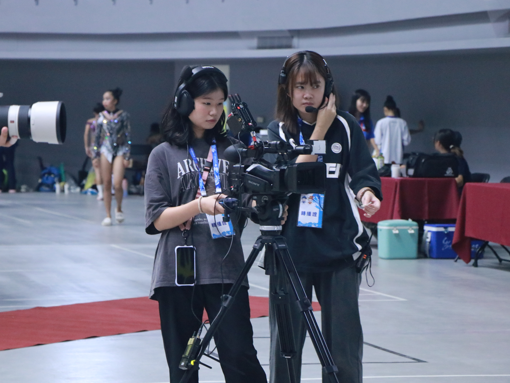

孫于晴 SUN YU QING
shinysun0915@gmail.com
0978-416-139
我目前就讀於世新大學資訊傳播學系三年級，熱衷於體育賽事，對棒球規則及賽事節奏擁有敏銳洞察力，擅長將長篇賽事素材濃縮為吸引觀眾的精華影片，並完整參與企劃、拍攝到後製剪輯。
此外，我也同時具備敏銳的社群觀察力，曾經產出單支 8.5 萬次觀看 的 Reels 與 7,000 次瀏覽 的 Threads，能夠產出符合演算法且引起共鳴的影片。
學習經驗
1. 傳播技能展 - 後製組組長
帶領團隊完成影片，負責管理進度及影片粗剪，熟練運用 Premiere Pro 進行剪輯，並能掌握影片的敘事節奏。
2. 直播節目製作 / 精華剪輯
協助節目企劃以及負責剪輯直播精華，單支影片累計觀看近3000人次。
3. 「沒有名字的地方」MV 後製 / 側拍
負責素材整理與初步剪輯，並依照導演需求完成剪輯，同時也擔任側拍紀錄拍攝現場的幕後花絮。
4. 全運會競技體操攝影
擔任現場轉播攝影，能夠快速捕捉運動員完成高難度動作時的瞬間。

專業技能
Premiere Pro
Photoshop
Illustrator
Figma
作品集
影音作品
平面作品


專案企劃
側拍作品